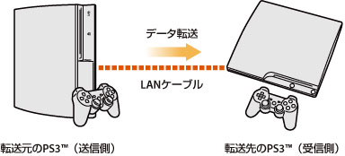
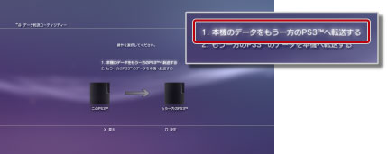
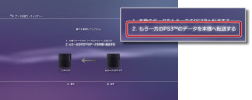

データ転送ユーティリティー
LANケーブルを使って、PS3™の本体ストレージに保存されたデータを別のPS3™の本体ストレージに転送（コピーまたはムーブ）できます。

重要
- この機能を使うと、転送先の本体ストレージ（受信側）に保存されているデータは全て消去されます。
- 消去されたデータは元に戻すことはできませんので、誤って大切なデータを消さないように注意してください。データが消失／破損しても、当社は一切の責任を負いかねます。あらかじめご了承ください。
- 一部のデータに関しては、転送できない場合があります。詳しくは、こちらをご覧ください。
準備する
データ転送をする前に、次の準備をしてください。
1. |
2台のPS3™のシステムソフトウェアを最新バージョンにアップデートする。 |
|---|---|
2. |
転送元のPS3™の準備をする。 |
- Sony Entertainment Networkのアカウントを作成していない場合は、アカウントを作成する
- -
 （PlayStation™Network）から
（PlayStation™Network）から  （サインアップ）を選び、画面の指示に従ってアカウントを作成してください。
（サインアップ）を選び、画面の指示に従ってアカウントを作成してください。 - PlayStation®Storeで購入したコンテンツを転送する場合は、機器認証を解除しておく
- - （PlayStation™Network）＞
 （アカウント管理）＞
（アカウント管理）＞ （機器認証）を選んでください。
（機器認証）を選んでください。 - トロフィーの情報を転送する場合は、あらかじめPSNSMのサーバーに保存する
- - PSNSMにサインインした状態で、 （PlayStation™Network）＞
 （トロフィーコレクション）を選んでください。
（トロフィーコレクション）を選んでください。 - リトルビッグプラネット™のゲームデータを転送先のPS3™で使う場合は、「プロフィール」と「作成したステージ」をセーブデータにバックアップしておく。
重要
アカウントを作成しないでデータ転送を行う場合、次の制限事項があります。
- ゲームによって、転送先のPS3™でセーブデータが使えなくなる場合があります。
- 転送したセーブデータを使ってゲームをしたときに、トロフィーを獲得できなくなります。
- トロフィーの情報が転送されません。
データを転送する
2台のPS3™の電源を切った状態で操作を始めてください。この機能を使って転送できるデータは、転送先のPS3™にコピー（複製）されます。コピー禁止のゲームセーブデータや著作権保護されたコンテンツなどはムーブ（移動）されます。
1. |
LANケーブルを使って、2台のPS3™を直接接続する。 |
|---|---|
2. |
2台のPS3™を、テレビに接続する。 |
3. |
テレビの電源を入れ、2台のPS3™の電源を入れる。 |
4. |
転送元のPS3™で、 |
5. |
［1. 本機のデータをもう一方のPS3™へ転送する］を選ぶ。  準備項目が完了していない場合は、画面の指示に従って操作してください。 |
6. |
データ転送待機中の状態になったら、テレビの映像入力を転送先のPS3™に切りかえる。 |
7. |
転送先のPS3™で、 |
8. |
［2. もう一方のPS3™のデータを本機へ転送する］を選ぶ。  画面の指示に従ってデータ転送をしてください。 |
 （設定）＞
（設定）＞ （本体設定）＞［データ転送ユーティリティー］を選ぶ。
（本体設定）＞［データ転送ユーティリティー］を選ぶ。ヒント
- データ転送が完了したら、転送元のPS3™の画面を再度テレビに表示し、
 （ユーザー）から
（ユーザー）から （本体の電源を切る）を選んで電源を切ってください。
（本体の電源を切る）を選んで電源を切ってください。 - PlayStation®Storeからダウンロードしたコンテンツがある場合、データ転送後に、転送先のPS3™を機器認証する必要があります。コンテンツを所有するユーザーでログインし、（PlayStation™Network）＞（アカウント管理）＞（機器認証）を選んでください。
データ転送ユーティリティー機能の制限について
データ転送ユーティリティー機能では、次のデータが転送できません。また、転送はできても再生できない場合があります。最新情報は各地域のWebサイトをご覧ください。
- 本体ストレージに保存されたSingStar™の楽曲データ
- 著作権保護された動画ファイル（ファイルタイプがMGV、ETS）
- DivX® VODサービスに対応した動画ファイル
- 本体ストレージにインストールしたPlayStation®2規格ソフトウェア
- - 「信長の野望Online」および「同拡張パック」
- - 「ファイナルファンタジーXI」および「拡張データディスク」
- - 「SOCOM II: U.S. NAVY SEALs」および「OPM* Issue 87, OPM* Issue 88, OPM* Issue 89, OPM* Issue 90に付属の関連ディスク」
- - SOCOM 3: U.S. NAVY SEALs
- - SOCOM: U.S. NAVY SEALs Combined Assault
次のデータについては、データ転送後に操作が必要になります。
- GripShift®
- - データ転送後にゲームを起動すると、エラーメッセージが表示され、ゲームがプレイできなくなります。ゲームを再度ダウンロードおよびインストールすると、正しく起動できるようになります。
- Ghostbusters™、Ghostbusters™: The Video Gameのセーブデータ
- - データ転送後にゲームを起動すると、セーブデータが認識されません。ゲームを一度終了し、再度起動するとセーブデータをお使いいただけるようになります。
| * |
Official PlayStation Magazine |
|---|
ヒント
ソフトウェアの販売状況は地域によって異なります。